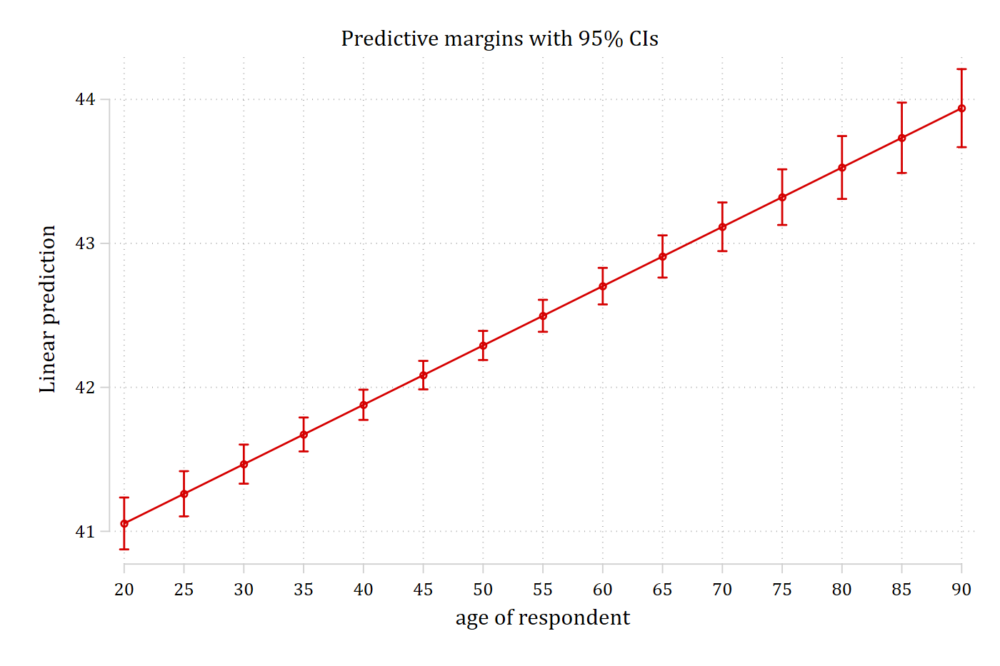
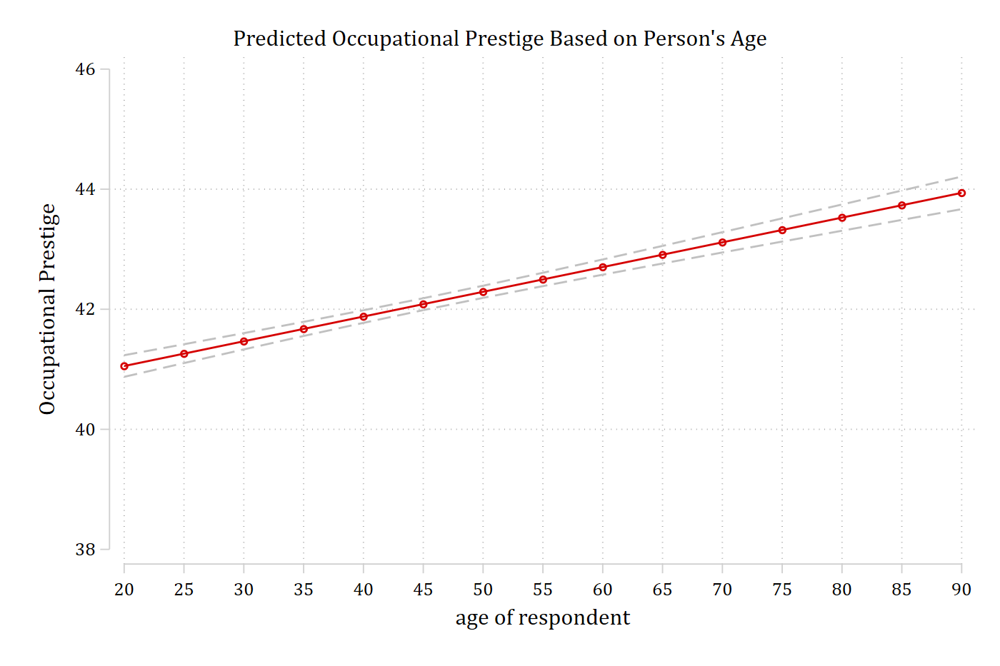

A2.1 Stata factor syntax
- You should always use factor syntax when fitting a regression model in Stata
- Factor syntax provides information to Stata about whether an IV should be treated as continuous or as nominal/binary
- Extremely important for calculations of predictions and marginal effects
- Also important when you have “linked” IVs such as polynomials, e.g. age and age2
- The “c.” prefix to an IV tells Stata that variable is to be treated as continuous
- The “i.” prefix tells Stata the IV should be treated as nominal/binary
- Added benefit of not needing to create a series of dummy variables for nominal IVs with ≥ 3 categories. Stata will make the series of dummies for you
- By default, the first category is omitted as the reference group
- You can change this with ib#. where the # indicates which category to omit
- You can omit no categories with ibn. (“indicator base none”)
- Not commonly used in a regression model; helpful for descriptives
Examples below…
Example of nominal variables with factor syntax
use "https://tdmize.github.io/data/data/addhealth4", clear(addhealth4_dmv.dta | Add Health Wave IV | DMV Workshop)sum ibn.race Variable | Obs Mean Std. dev. Min Max
-------------+---------------------------------------------------------
race |
White | 4,307 .7452984 .435744 0 1
Black | 4,307 .2189459 .4135799 0 1
Native Am.. | 4,307 .0058045 .0759747 0 1
Asian | 4,307 .0299512 .1704726 0 1sum i.race Variable | Obs Mean Std. dev. Min Max
-------------+---------------------------------------------------------
race |
White | 4,307 .7452984 .435744 0 1
Black | 4,307 .2189459 .4135799 0 1
Native Am.. | 4,307 .0058045 .0759747 0 1
Asian | 4,307 .0299512 .1704726 0 1sum ib2.race Variable | Obs Mean Std. dev. Min Max
-------------+---------------------------------------------------------
race |
White | 4,307 .7452984 .435744 0 1
Native Am.. | 4,307 .0058045 .0759747 0 1
Asian | 4,307 .0299512 .1704726 0 1Regression models with factor syntax
- For linear regression models in Stata, use the regress command:
regress depvar indepvar1 indepvar2 indepvar3 …use "https://tdmize.github.io/data/data/cda_gss", clear(cda_gss.dta | GSS 1972-2021 CDA - Categorical Data Analysis | date created 202
> 3)regress occprest c.age i.woman i.college Source | SS df MS Number of obs = 58,304
-------------+---------------------------------- F(3, 58300) = 6232.46
Model | 2765051.56 3 921683.852 Prob > F = 0.0000
Residual | 8621657.35 58,300 147.884346 R-squared = 0.2428
-------------+---------------------------------- Adj R-squared = 0.2428
Total | 11386708.9 58,303 195.302281 Root MSE = 12.161
-------------------------------------------------------------------------------
occprest | Coefficient Std. err. t P>|t| [95% conf. interval]
--------------+----------------------------------------------------------------
age | 0.041 0.003 14.027 0.000 0.035 0.047
|
woman |
Women | -0.178 0.101 -1.756 0.079 -0.376 0.021
|
college |
College De.. | 16.422 0.121 136.142 0.000 16.185 16.658
_cons | 36.621 0.157 233.710 0.000 36.314 36.928
-------------------------------------------------------------------------------Estimating and Plotting Predictions in Stata
- mtable is an SPost13 command that reports tables of predictions
mtable, at(age=(20(5)90))Expression: Linear prediction, predict()
| age xb
----------+-------------------
1 | 20 41.055
2 | 25 41.261
3 | 30 41.467
4 | 35 41.673
5 | 40 41.879
6 | 45 42.085
7 | 50 42.291
8 | 55 42.497
9 | 60 42.703
10 | 65 42.909
11 | 70 43.115
12 | 75 43.321
13 | 80 43.527
14 | 85 43.733
15 | 90 43.939
Specified values where .n indicates no values specified with at()
| No at()
----------+---------
Current | .nPlotting predictions
- The easiest way to plot predictions is to make them with margins and then plot them with marginsplot
- Note that margins gives you the same output as mtable, just in a messier and less helpful format. Therefore, I am running it quietly so I don’t see the table of predictions again (see below)
- marginsplot makes the plot of the predictions
- I always recommend letting marginsplot make its default plot first before fiddling with options
- Literally: you should just type marginsplot and nothing else and see what you get as the first step
- It is helpful to see the default and then edit from there
qui margins, at(age=(20(5)90))
marginsplotVariables that uniquely identify margins: age
This is a pretty nice plot given all we had to type was marginsplot. However, some options make it more informative
marginsplot, ///
recastci(rline) ciopts(lpat(dash) col(gs12)) ylab(38(2)46) ///
title("Predicted Occupational Prestige Based on Person's Age") ///
ytitle("Occupational Prestige")Variables that uniquely identify margins: age
Confidence interval options with marginsplot
- For line plots, I dislike the default confidence intervals (rcap) that marginsplot uses
- It is up to personal preference, but I also prefer light grey CIs instead of having CIs being the same color as the respective line
- For line plots, using rarea or rline options for CIs works well
- You specify these as a recastci( ) option on your marginsplot command
marginsplot, recastci(rarea)- To change the color of the CIs, use the ciopts( ) option and then specify the color. The graph above uses a mid-grayscale color: gs12
marginsplot, recastci(rarea) ciopts(col(gs12))- For line plots, I like dashed CIs which you specify with the lpattern option or lpat for short. E.g. lpat(dash)
marginsplot, recastci(rline) ciopts(col(gs12) lpat(dash))